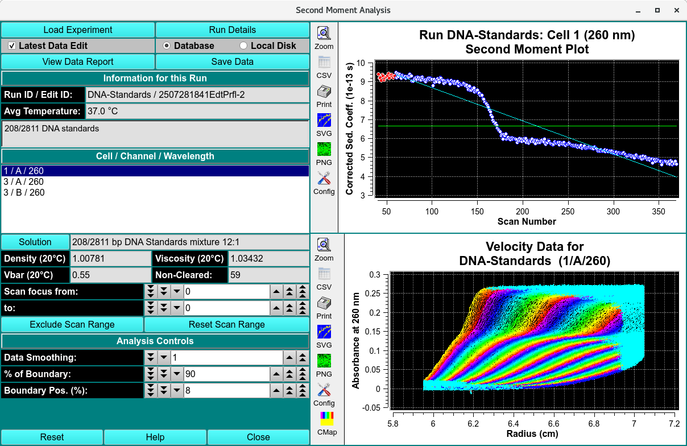

Second Moment Data Analysis¶
The second moment analysis will calculate weight-average sedimentation coefficients for each scan included in the analysis by finding the second moment point in the boundary. The second moment analysis can serve as a valuable diagnostics tool in identifying problems such as time-dependent degradation, aggregation and even concentration dependency.
Note
It is important to keep in mind that the second moment analysis is only valid for scans that have cleared the meniscus and still have a stable plateau. All other scans should be excluded from the analysis.

Functions¶
Load Experiment |
Click on this button and, in the resulting Load Data Dialog, select an edited data set to load. |
Run Details |
Bring up a Run Details Dialog with a summary of data and run details. |
Latest Data Edit |
Uncheck to allow choosing an edit other than the latest one for the experimental data. |
Database |
Check to specify data input from the database. |
Local Disk |
Check to specify data input from local disk. |
View Data Report |
Create a results text file and display its contents in a text dialog. |
Save Data |
Create several data and report files based on input data and vHW parameters. |
Run ID / Edit ID: |
The main run title of the data and an edit identifier are displayed. |
Avg Temperature: |
The average temperature of solute is displayed in Celsius. |
(description) |
The text box below the one for temperature shows a full data description string. |
Cell / Channel / Wavelength |
The text box below this label gives cell, channel and wavelength triples available in this data set. Highlight the desired value. |
Solution |
Click this button to open a Solution Management dialog that allows changes to buffer and analyte characteristics of the data set. |
Density (20°C) |
Shows the density value for the loaded experiment. Click the Solution button to open a dialog in which density and other values may be changed. |
Viscosity (20°C) |
Shows the viscosity value for these loaded experiment. Click the Solution button to open a dialog in which viscosity and other values may be changed. |
Vbar (20°C) |
Shows the vbar value for the loaded experiment. Click the Solution button to open a dialog in which vbar and other values may be changed. |
Skipped |
The count of experiment data scans skipped. |
Scan focus from: |
Choose the first of a range of scan numbers that may potentially be excluded from analysis. |
To: |
Choose the end of a range of scan numbers that may potentially be excluded from analysis. The From/To scan range is illustrated in both plots to the right. |
Exclude Scan Range |
If the From/To scan range selections are as desired, click on this button to exclude the indicated scans from analysis. |
Reset Scan Range |
Reset to the full range of scans. |
Data Smoothing: |
Choose the number of points to use for any smoothing of raw input data. |
% of Boundary: |
Choose the percentage of the range from concentration baseline to plateau that is to be used for analysis. |
Boundary Pos. (%): |
Choose the percent of the plateau-baseline range that is to be added to the baseline to form the beginning of analysis span. |
(Second Moment Plot) |
The upper of the two right-side plots shows the second moment plot of sedimentation coefficient for each scan. |
(Velocity Data Plot) |
The lower of the right-side plots shows selected velocity data for which a second moment calculation has been made. |
Window Controls
Reset |
Indicate that parameters are to be reset and the plots re-displayed based on original parameters. |
Help |
Display this detailed Second-Moment help. |
Close |
Close all windows and exit. |